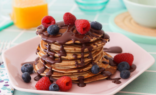

Sabras un poco de mi 💜
Hola a todos, un placer tenerlos aquí de ante mano, me presento, mi nombre es Wendy Alejandra Carlos Muñoz,tengo 27 años soy ♊geminis y dicen que somos bipolar pero no creo eso ajajajajaja, naci en Bogotá, estudie diseño gráfico profesional en la Escuela de Artes y Letras,lo culmine en el año 2019, vivo con mi mamá, mi hermano y mi hijo.
Qué me gusta 😛
Bueno a mí en lo personal me encanta bailar, que bailo se preguntaran de todo lo que me ponga, pero que es algo me mata bailar es la salsa, amo como mis papás en su tiempo la bailan y de ellos aprendí a coger ese gran gusto por ese género, me gustaría poder mover los pies ajaja como esos concursantes de salsa, pero siento que ya a mi edad estoy grande para empezar un curso de esos. También me gusta mucho la comida como de todo en general,pero muy poco de verduras, aunque no les hago el feo, mi debilidad son los dulces porque dirán ustedes, desde muy chica me han dicho que sufro de hipoglucemia para muchos doctores eso no es una enfermedad,pero para otros sí, pero que ocasiono eso en mi vida, cuando era mucho más joven comía demasiados dulces y lo que causaba ese nivel de azúcar era que me desmayaba de la nada y en cualquier momento me paso en el colegio e incluso en la universidad.
Me gusta poder conocer pueblitos y lugares de Colombia, me parece tan bonito conocer su propio país, pero lo malo de eso es que depende de poder tener dinero para poder viajar, comer, hospedarse, todo es cuestión de dinero, pero lo bueno es que cuando consigo trabajo me gusta ahorrar y proyectar viajes en mi vida sean a largo o corto plazo y así poder disfrutar junto a mi nene o mi familia.
Intereses
Aquí podrán encontrar un poco de mis gustos o lo que casualmente hago en mi día a día y lo que me gustaría conocer
- Bailar
- Viajar
- Leer y hacer poesía
- Fotográfia
- Ver videos de youtube de la suit de abobe
- Ayudar a mi hijo con sus tareas
Mis conocimientos ✔️
- Id
- InDesing con este programa diagramo:revista, libro e periódico
- Ps
- Photoshop con este programa hago retoques,invitaciones, gif, animaciones,restauración fotografíca,fotomontaje
- Ai
- Ilustrator con este programa realizo diseños para invitaciones,publicaciones para redes, personajes para animación, logos entre otros
- Pr
- Premiere Pro con este programa realizo edición de video
- Ae
- After effects con este programa realizo edición de video y animaciones
Aprenden conmigo hacer unos panqueque te divertiras
Ingredientes
- Banano
- Avena en hojuela
- Un poquitito de leche
- Huevo
- Canela
- Azucar o stevia
- Polvo para hornear
- Fruta que te guste puede ser banano,arandanos,fresa el que quieras
Preparación
Empezamos con una buena musiquita para que este a gusto
SugerenciaLuego licuamos la avena en hojuelas, luego de ello se me olvido el huevo en los ingredientes jajaja bueno le echan el huevo, parten el banano en 2 luego le echa canela y azúcar al gusto y un poquito de polvo para hornear, ya luego le van echando de a poquita leche y la consistencia tiene que quedar espesa, si le queda líquida le quedo mal ajajaja. Bueno seguimos, en un sartén colocamos aceite,no mucho lo dejamos calentar y con una cuchara onda como de sopa echamos la mezcla que acabamos de hacer y antes que se le haga unos agujeritos le pone la fruta que a usted más le gusté, esa fruta la tapa con la mezcla que se realizó cuando ya se hagan varios agujeritos es hora amigos ya en serio es hora de voltearla a ojo, mira que el otro lado no se le queme y listoooo. Quedan hechos sus panqueques ricos y deliciosos, los pueden acompañar de miel para panqueques y un juguito o algo caliente lo que a ustedes les guste.